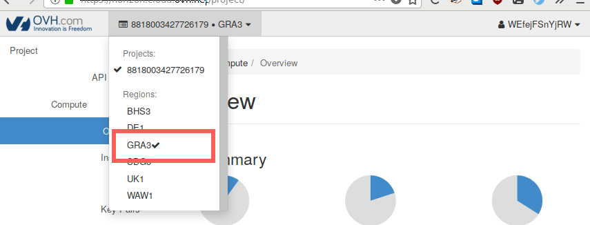

Operate Resources in Public and Private Clouds Thanks to OpenStack
The case of OMH – Online Mines Hosting
OpenStack has become the de-facto solution to operate compute, network and storage resources in public and private clouds. In this lab, we are going to:
- Deploy and configure OpenStack using EnOS1, 2 (Day 1).
- Operate this OpenStack to manage IaaS resources (e.g. boot VMs) (Day 1/Day 2).
- Start your OMH – Online Mines Hosting – company that deploys Wordpress as a Service (Day 2).
- Automatize all the stuff with the Heat template engine (i.e., manage your cloud from the sofa! – Day 2).
Find the slides of the lecture there.
Table of Contents
- 1. Requirements and Setup
- 2. Heat introduction
- 2.1. Boot a VM
- 2.2. Need more flexibility: let’s add parameters!
- 2.3. Need our deployment to return values: let’s use outputs!
- 2.4. Integrate
cloud-initin Heat - 2.5. Get a flexible post-installation script with
cloud-initand parameters - 2.6. Nested templates
- 2.7. Share information between nested templates
- 3. Exercise: Automatic deployment of WordPress with Heat
- 4. Appendix
1 Requirements and Setup
During the last session we used an OVH account to setup 2 machines,
put them into a private network and then install OpenStack on top of
them (see Day 2 → Sec 1). We got these 2 machines using the web
interface of OVH. However, remember that the Public Cloud
infrastructure of OVH is managed by OpenStack itself. To convince
yourself, first activate the new voucher for the current session
RV47-993D. Then, from your project, click on the OpenStack tab.
From there, you can open OVH OpenStack Horizon.
Figure 1: Open the Horizon of your OVH Public Cloud project.
Connect yourself on OVH OpenStack Horizon, and select region GRA3 in
the region dropdown.

Figure 2: Select GRA3 Region from Horizon.
Now you can setup the 2 machines from Horizon. But, if you can do it
from Horizon, then can do it from OpenStack CLI! The only things you
need is an OpenStack RC file that contains all OS_* environment
variables so you can call OpenStack CLI. You can download the
OpenStack RC file from Horizon. By clicking on your name and then
OpenStack RC File v2.
Figure 3: Download OpenStack RC File from Horizon.
If you forgot about the OpenStack RC file, read again the “Unleash the Operator in You” section from the first session (see Day 1 → Sec 3).
Downloads that OpenStack RC File, then put it into the lib directory
and rename it openrc.sh. With the OpenStack RC file, we can
automatize all the setup. A script that call proper OpenStack commands
is available online at lib/setup-tp-imt-ovh.sh. In this script,
we reuse the ../day2/lib/os-control-compute.sh and
../day2/lib/os-compute.sh script from the previous session. Here,
we give theme to cloud init (i.e., --user-data) to provision
machines. Note, to execute this script you need to install
virtualenv.
#!/usr/bin/env bash set -o errexit # `help set' SSH_KEY_SEC=~/.ssh/id_tp_omh # SSH private key for the lab SSH_KEY_PUB=${SSH_KEY_SEC}.pub # SSH public counter part # Build a venv to install openstack-cli in a sandbox if [ ! -d tp-imt-venv ] then virtualenv --python=python2.7 --prompt='(tp-imt) ' tp-imt-venv fi . tp-imt-venv/bin/activate # Install OpenStack CLI (if not already installed) if ! python -c "import openstackclient" &> /dev/null then pip install python-openstackclient==3.14.0 fi # Source the openrc file provided by OVH # Get that file from: # Cloud > Serveurs > tp-enos-imt > OpenStack > ... > Télécharger un # fichier de configuration OpenStack > GRA 3 . ./openrc.sh set -o xtrace # Import the public key of the tp into OpenStack keychain openstack keypair show tp-omh || \ openstack keypair create --public-key "${SSH_KEY_PUB}" tp-omh # Setup a private network on the vRack named `provider-net'. In # OpenStack the /provider network/ is the network setup by the admin # to interconnect VMs. This is different to /tenant networks/ created # by users within a tenant which are not shared among other tenants. # In this configuration, the provider network is configured to provide # IP on 192.168.0.0/24, started from 192.168.0.2 to 192.168.0.254. The # `--no-dhcp' instructs netron that IP will be addressed statically. openstack network show provider-net ||\ openstack network create provider-net openstack subnet show provider-net ||\ openstack subnet create\ --network provider-net\ --subnet-range 192.168.0.0/24\ --allocation-pool start=192.168.0.2,end=192.168.0.254\ --no-dhcp\ provider-net # Create the `os-control-compute' machine. Put it in both public # (i.e., `Ext-Net') and provider (i.e., `provider-net') networks. openstack server show os-control-compute ||\ openstack server create\ --image 'Debian 9'\ --flavor b2-7\ --network Ext-Net\ --network provider-net\ --key-name tp-omh\ --user-data ../../day2/lib/os-control-compute.sh\ --wait\ os-control-compute # Create the `os-compute' machine. Then put it in the public network. openstack server show os-compute ||\ openstack server create\ --image 'Debian 9'\ --flavor b2-7\ --network Ext-Net\ --network provider-net\ --key-name tp-omh\ --user-data ../../day2/lib/os-compute.sh\ --wait\ os-compute # Copy the private counterpart of the SSH key on `os-control-compute` # so that it can be used to ease the SSH connection to the second # machine. PUBLIC_IP_OS_CONTROL_COMPUTE=$(python get-public-ip.py "$(openstack server show -c addresses -f value os-control-compute)") scp -i "${SSH_KEY_SEC}" "${SSH_KEY_SEC}"\ debian@${PUBLIC_IP_OS_CONTROL_COMPUTE}:/home/debian/.ssh/id_rsa # To connect on the os-control-compute openstack server ssh\ --login debian\ --identity "${SSH_KEY_SEC}"\ --address-type Ext-Net -4\ os-control-compute
2 Heat introduction
In the previous sessions, we saw how to boot a VM with OpenStack, and execute a
post-installation script using the user-data mechanism. Such mechanism can
help us to install software but it is not enough to deploy a real Cloud
application. Cloud applications are composed of multiple services that
collaborate to deliver the application. Each service is a charge of an aspect of
the application. This separation of concerns brings flexibility. If a single
service is overloaded, it is common to deploy new units of this service to
balance the load.
Let’s take a simple example! WordPress3 is a very popular content management system (CMS) written in PHP, which is mainly used as a blog system. It is composed of two elements: a Web server (Apache) and a database (MySQL). Apache serves the PHP code of WordPress and store its information in the database.
Automation is a very important concept for devops. Imagine you have to deploy several WordPress instances in your datacenter. You don’t want to deploy and manage it manually. That is why, we are going to use an OpenStack project to automate the deployment of applications: OpenStack Heat.
Heat is the OpenStack orchestrator: it eats templates (called HOT for Heat Orchestration Template - which are files written in yaml) describing the OpenStack infrastructure you want to deploy (e.g. vms, network, storages) as well as software configurations. Then the Heat engine is in charge of sending the appropriate requests to OpenStack to deploy the system described in your template.
2.1 Boot a VM
The simplest HOT template your can declare describes how to boot a VM:
#heat_template_version: 2017-09-01 # Here we define a simple decription of the template (optional): description: > Simply boot a VM! # Here we declare the resources to deploy: resources: # Name of my resource: my_vm: type: "OS::Nova::Server" properties: name: hello_world image: debian-9 flavor: m1.small key_name: admin
As depicted in this example, the different OpenStack resources can be declared
using types. Here, the type OS::Nova::Server can be used to declare a virtual
machine. A type defines different properties, which should be here familiar for
you. You can now run the stack:
$ openstack stack create -t ./boot_vm.yml helloworld $ openstack stack list $ openstack stack show helloworld $ openstack server list $ openstack stack delete helloworld
2.2 Need more flexibility: let’s add parameters!
Templates can be more flexible with parameters. To that end you can:
- declare the parameters to provide to your template;
- use the intrinsic functions
get_paramto fetch them in your resource declarations.
Here’s an example:
heat_template_version: 2017-09-01 description: > Simply boot a VM with parameters! # Here we define parameters parameters: param_flavor: type: string description: Flavor to use for servers default: m1.small param_key: type: string description: Key name to use for servers default: admin # Here we use intrinsic functions to get params resources: my_vm: type: "OS::Nova::Server" properties: name: hello_world image: debian-9 flavor: { get_param: param_flavor } key_name: { get_param: param_key }
Create the new stack by providing parameters :
$ openstack stack create -t ./boot_vm_with_params.yml --parameter param_flavor=m1.medium helloworld
$ openstack server list
$ openstack stack delete helloworld
2.3 Need our deployment to return values: let’s use outputs!
Templates can declare a set of attributes to return. For instance, you might need to know the IP address of a resource at run-time. To that end, you can declare outputs:
heat_template_version: 2017-09-01 description: > Simply boot a VM and outputs its IP address! parameters: param_flavor: type: string description: Flavor to use for servers default: m1.small param_key: type: string description: Key name to use for servers default: admin resources: my_vm: type: "OS::Nova::Server" properties: name: hello_world image: debian-9 flavor: { get_param: param_flavor } key_name: { get_param: param_key } # We set here outputs (stack returned attributes) outputs: HOSTIP: description: IP address of the created instance value: { get_attr: [my_vm, first_address] }
We used here another intrinsic function: get_attr which is used to get the IP
address from our VM. Returned values can be displayed with the CLI or fetched
from other templates (we will see this last case latter):
$ openstack stack create -t ./boot_vm_with_params.yml helloworld $ openstack stack output list $ openstack stack output show helloworld HOSTIP $ openstack stack delete helloworld
2.4 Integrate cloud-init in Heat
It is possible to declare user-data in the template:
heat_template_version: 2017-09-01 description: > Simply boot a VM with a post-installation script! resources: my_vm: type: "OS::Nova::Server" properties: name: hello_world image: debian-9 flavor: m1.small key_name: admin # We set here user-data user_data: | #!/bin/bash apt-get update apt-get install -y lolcat
2.5 Get a flexible post-installation script with cloud-init and parameters
With Heat, it is possible to provide a parameter to your user-data at run-time!
heat_template_version: 2017-09-01 description: > Simply boot a VM and set a post-installation script with params parameters: PackageName: label: Name of the package to install type: string resources: my_vm: type: "OS::Nova::Server" properties: name: hello_world image: debian-9 flavor: m1.small key_name: admin user_data: | # This intrinsic function can replace strings in user-data: str_replace: # We define here the parameters for our script params: ${PACKAGE_NAME}: { get_param: PackageName} # We define here the script template: | #!/bin/bash apt-get update apt-get install -y ${PACKAGE_NAME}
We used here the new intrinsic function str_replace to replace strings in our
user-data.
2.6 Nested templates
It is possible to compose one logical stack with multiple templates. To that end
we use nested templates. Here is boot_vm_with_params.yml file describing how
to boot a VM with parameters:
heat_template_version: 2017-09-01 description: > Simply boot a VM with parameters! # Here we define parameters parameters: param_name: type: string description: Host name param_flavor: type: string description: Host flavor # Here we use intrinsic functions to get params resources: my_vm: type: "OS::Nova::Server" properties: image: debian-9 key_name: admin name: { get_param: param_name } flavor: { get_param: param_flavor }
Here’s the boot_vms.yml file which use the previous one to declare multiple
VMs:
heat_template_version: 2017-09-01 description: > Declare two VM resources based on a nested template! # Here we use intrinsic functions to get params resources: webserver: type: boot_vm_with_params.yml properties: param_name: webserver param_flavor: m1.tiny database: type: boot_vm_with_params.yml properties: param_name: database param_flavor: m1.medium
You can then start multiple VMs with:
$ openstack stack create -t ./boot_vms.yml helloworld
2.7 Share information between nested templates
Let’s declare now a template whose VM needs to determine the IP address of
another VM at run time. Here’s the content of ./boot_vm_need_ip.yml:
heat_template_version: 2017-09-01 description: > Simply boot a VM but requires the remote host IP address! parameters: IPAddress: label: IPAddress of the remote host type: string resources: my_vm: type: "OS::Nova::Server" properties: name: hello_world image: debian-9 flavor: m1.small key_name: admin user_data: | # This intrinsic function can replace strings in user-data: str_replace: # We define here the parameters for our script params: ${IP_ADDRESS}: { get_param: IPAdress} # We define here the script template: | #!/bin/bash echo "${IP_ADDRESS} remote_host" > /etc/hosts
The attribute of the IP address can be fetched with the get_attr intrinsic function:
heat_template_version: 2017-09-01 description: > Declare two VM resources based on a nested template! # Here we use intrinsic functions to get params resources: webserver: type: ./boot_vm_need_ip.yml properties: IPAdress: { get_attr: [database, HOSTIP] } database: type: ./boot_vm_with_params.yml properties: param_name: database param_flavor: m1.medium
3 Exercise: Automatic deployment of WordPress with Heat
You now have to use what you learned from the previous section to deploy a WordPress application using Heat. We are going to deploy WordPress inside two VMs: the first one holding the web server, the second one running the database:
- VM1: Apache + PHP + WordPress code
- VM2: MySQL
To that end you must create three HOT files:
- mysql.yml: containing the description of the VM running MySQL;
- webserver.yml: containing the description of the VM running the Web server;
- wpapp.yml: containing the description of the WordPress application
(
mysql.yml+web_server.ymlas nested templates).
To help you, we provide the post-installation script needed for both services. You should read them to understand what they do. The first one is for the database:
#!/usr/bin/env bash # Install and configure MariaDB for Debian 9. # Install MariaDB apt update -q apt install -q -y mariadb-server mariadb-client # Next line stops mysql install from popping up request for root password export DEBIAN_FRONTEND=noninteractive sed -i 's/127.0.0.1/0.0.0.0/' /etc/mysql/mariadb.conf.d/50-server.cnf systemctl restart mysql # Setup MySQL root password and create a user and add remote privs to app subnet mysqladmin -u root password ${DB_ROOTPASSWORD} # Create the wordpress database cat << EOSQL | mysql -u root --password=${DB_ROOTPASSWORD} FLUSH PRIVILEGES; CREATE USER '${DB_USER}'@'localhost'; CREATE DATABASE ${DB_NAME}; SET PASSWORD FOR '${DB_USER}'@'localhost'=PASSWORD("${DB_PASSWORD}"); GRANT ALL PRIVILEGES ON ${DB_NAME}.* TO '${DB_USER}'@'localhost' IDENTIFIED BY '${DB_PASSWORD}'; CREATE USER '${DB_USER}'@'%'; SET PASSWORD FOR '${DB_USER}'@'%'=PASSWORD("${DB_PASSWORD}"); GRANT ALL PRIVILEGES ON ${DB_NAME}.* TO '${DB_USER}'@'%' IDENTIFIED BY '${DB_PASSWORD}'; EOSQL
Here’s the one for the web server:
#!/usr/bin/env bash # Install and configure Apache to serve Wordpress for Debian 9. apt-get update -y apt-get upgrade -y apt-get install -q -y --force-yes wordpress apache2 curl cat << EOF > /etc/apache2/sites-available/wp.conf Alias /wp/wp-content /var/lib/wordpress/wp-content Alias /wp /usr/share/wordpress <Directory /usr/share/wordpress> Options FollowSymLinks AllowOverride Limit Options FileInfo DirectoryIndex index.php Require all granted </Directory> <Directory /var/lib/wordpress/wp-content> Options FollowSymLinks Require all granted </Directory> EOF a2ensite wp service apache2 reload cat << EOF > /etc/wordpress/config-default.php <?php define('DB_NAME', '${DB_NAME}'); define('DB_USER', '${DB_USER}'); define('DB_PASSWORD', '${DB_PASSWORD}'); define('DB_HOST', '${DB_HOST}'); define('WP_CONTENT_DIR', '/var/lib/wordpress/wp-content'); ?> EOF
4 Appendix
4.1 reservation.yaml
--- # ############################################### # # Static provider parameter # # ############################################### # provider: ovh resources: os-control-compute: 192.168.0.2 os-compute: 192.168.0.3 # ############################################### # # Inventory to use # # ############################################### # # This will describe the topology of your services inventory: inventories/inventory.sample # ############################################### # # docker registry parameters # ############################################### # registry: type: none # ############################################### # # Enos Customizations # # ############################################### # enable_monitoring: no # ############################################### # # Kolla parameters # # ############################################### # # Repository kolla_repo: "https://git.openstack.org/openstack/kolla-ansible" kolla_ref: "stable/pike" # Vars : globals.yml kolla: kolla_base_distro: "centos" kolla_install_type: "source" docker_namespace: "beyondtheclouds" enable_openvswitch: "no" neutron_plugin_agent: "linuxbridge" enable_heat: "yes" # enable_trove: "yes" # enable_octavia: "yes" # enable_senlin: "yes" # enable_zun: "yes" # enable_designate: "yes" node_custom_config: "{{ cwd }}/patch"
4.2 patch/galera.cnf
[mysqld] innodb_buffer_pool_size = 512M